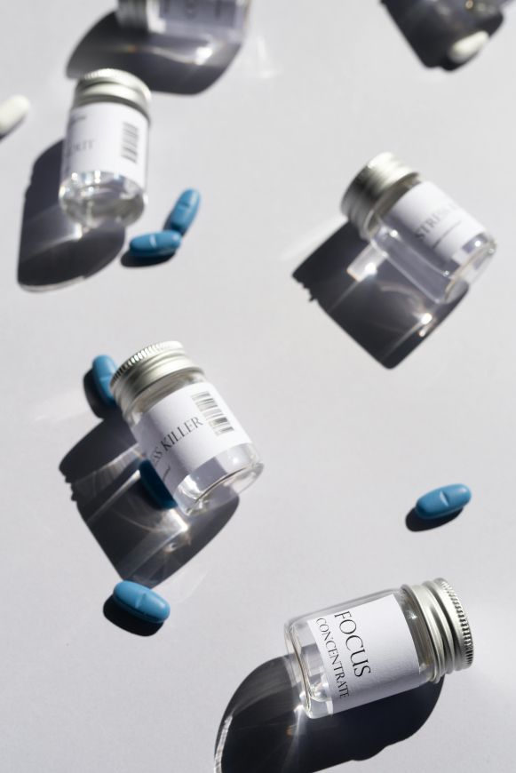
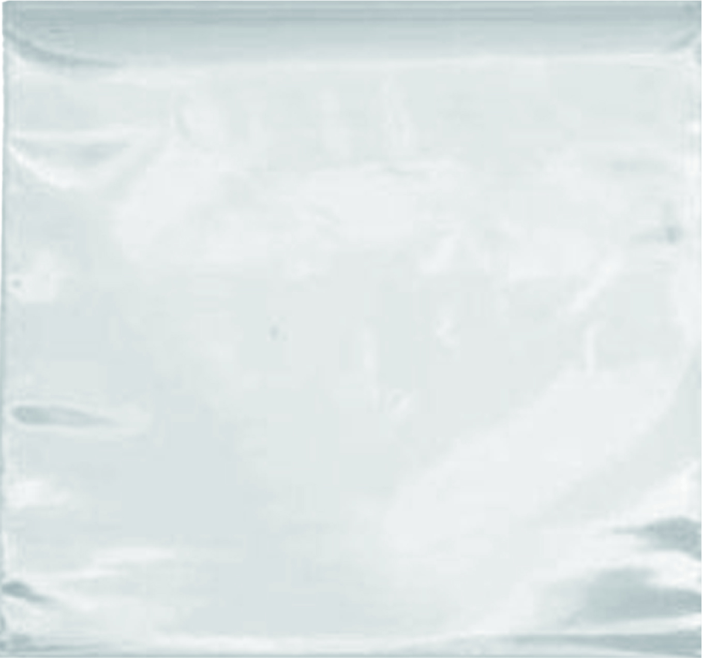

약;하다, 미래를 처방하다.
안녕하세요, 당신의 신약 투약 가이드 “약:하다” 입니다.
이곳은 2025년을 대표하는 신약 4종의
작용 원리부터, 실제 사용 사례, 그리고 미래 산업까지
한눈에 살펴볼 수 있는 신약 처방 가이드입니다.
당신께 처방될 신약은 아래와 같은 순서로 안내됩니다.

1. 신약명
이 약은 무엇일까요?
지금 주목받고 있는 혁신 신약을 간단히 알려드립니다.
지금 주목받고 있는 혁신 신약을 간단히 알려드립니다.
2. 작용 메커니즘
몸에 들어가면 무슨 일이 일어날까요?
그림으로 쉽게 이해하세요.
그림으로 쉽게 이해하세요.
3. 현재 적용 사례
병원, 임상, 환자의 삶에서 어떻게 활용되고 있는지
실제 사례를 보여드립니다.
실제 사례를 보여드립니다.
4. 미래 방향
이 약이 바꿀 산업의 흐름과
우리의 미래 건강 지도를 함께 그려봅니다.
우리의 미래 건강 지도를 함께 그려봅니다.


GLP-1 계열 치료제
지방을 녹이는 호르몬 신약
항체-약물 접합체
(ADC)
(ADC)
암세포만 골라 터뜨리는 스마트폭탄
비오피오이드 진통제
중독 없는 진통의 시대
mRNA 치료제
유전자를 읽고, 치료를 쓰다
당신에게 가장 필요한 한 알의 신약 이야기를 藥;하다에서 받아보세요.
당신 앞에 놓인 것은
단순한 약봉지가 아닙니다.
당신이 이해하고, 경험하고,
상상할 수 있도록 설계되었습니다.
이제, 아래의 신약을 눌러보며
당신에게 맞춤 처방될 신약들을 살펴보세요.